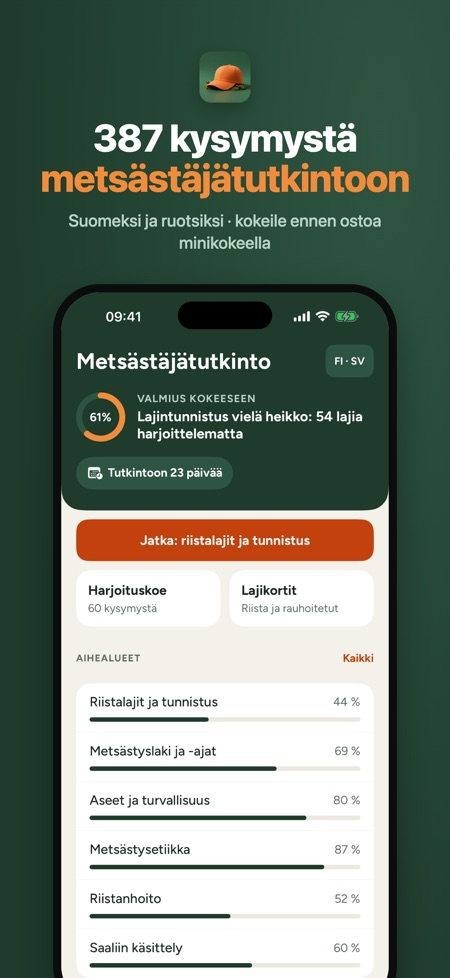
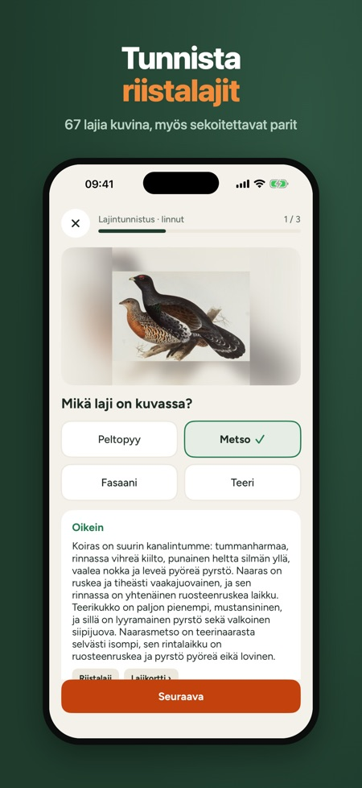
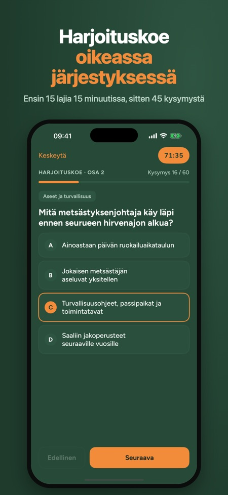

Valmistaudu metsästäjätutkintoon 387 harjoituskysymyksellä kuudesta aihealueesta ja harjoituskokeella tutkinnon järjestyksessä. Jokaiseen kysymykseen on selitys.



Riistalajit ja tunnistus, metsästyslaki ja -ajat, aseet ja turvallisuus, metsästysetiikka, riistanhoito sekä saaliin käsittely.
Ensin 15 lajintunnistuskysymystä (15 min), sitten 45 kysymystä: yhteensä 60 kysymystä ja 90 minuuttia. Hyväksymisraja on enintään 8 virhettä.
Kyllä. Kaikki kysymykset, selitykset ja lajikortit ovat suomeksi ja ruotsiksi, ja kieltä voi vaihtaa milloin vain.
Kyllä, sovellus toimii ilman verkkoyhteyttä, eikä se vaadi tiliä.
Ei. Yksi kertaosto avaa kaikki aihealueet, täydet harjoituskokeet ja kaikki 67 lajikorttia.
Kyllä. Ilman ostoa käytössä ovat Metsästysetiikka-aihe, 10 lajikorttia ja 20 kysymyksen minikoe.
Eivät. Kysymykset ovat sovelluksen tekijöiden omia, eikä sovellus liity Suomen riistakeskukseen.
Kyllä, Metsästysajat-taulukko lähteineen. Ajat muuttuvat asetuksilla, joten tarkista voimassa oleva tilanne ennen metsälle lähtöä.
Valmistaudu metsästäjätutkintoon: 387 harjoituskysymystä kuudesta aihealueesta, jokaiseen selitys, 67 lajikorttia luonnontieteellisin kuvalaatoin ja harjoituskoe tutkinnon järjestyksessä. Kertaosto, ei tilausta.
MITÄ SOVELLUKSESSA ON
• 387 kysymystä: riistalajit ja tunnistus, metsästyslaki ja -ajat, aseet ja turvallisuus (myös metsästystavat ja -välineet), metsästysetiikka, riistanhoito sekä saaliin käsittely
• Selitys jokaiseen vastaukseen
• Lajintunnistus kuvista: 67 riistalajia ja rauhoitettua lajia, myös helposti sekoitettavat lajiparit
• Harjoituskoe tutkinnon järjestyksessä: ensin 15 lajintunnistuskysymystä (15 min), sitten 45 kysymystä, yhteensä 60 kysymystä ja 90 minuuttia, hyväksymisraja enintään 8 virhettä
• Tulos aihealueittain ja heikoimman alueen vinkki
• Virheet: väärät vastaukset ja sekoitetut lajiparit kertautuvat, kunnes osaat ne kahdesti peräkkäin
• Lajikortit: tunnistus, sekoitettavat lajit, metsästysaika ja elinympäristö; haku suomeksi, ruotsiksi ja latinaksi
• Metsästysajat-taulukko lähteineen
• Valmiusmittari etusivulla
• Tutkintopäivä ja lähtölaskenta, halutessasi muistutus viikkoa ja päivää ennen tutkintoa
SUOMEKSI JA RUOTSIKSI
Metsästäjätutkinnon voi suorittaa suomeksi tai ruotsiksi. Kaikki kysymykset, selitykset ja lajikortit ovat molemmilla kielillä, ja kieltä voi vaihtaa milloin vain.
NÄIN SE TOIMII
Ilman ostoa käytössä ovat Metsästysetiikka-aihe, 10 lajikorttia ja 20 kysymyksen minikoe. Yksi kertaosto avaa kaikki aihealueet, täydet harjoituskokeet ja kaikki 67 lajikorttia. Toimii ilman verkkoyhteyttä, ei tiliä eikä mainoksia. Sovellus lähettää nimettömiä käyttötilastoja, jotka voi kytkeä pois asetuksista.
Sovellus on itsenäinen eikä liity Suomen riistakeskukseen. Kysymykset ovat omiamme, eivät tutkinnon virallisia kysymyksiä; lajikuvat ovat vapaasti käytettäviä historiallisia kuvituksia (lähteet sovelluksessa). Metsästysajat muuttuvat asetuksilla: tarkista voimassa oleva tilanne ennen metsälle lähtöä.